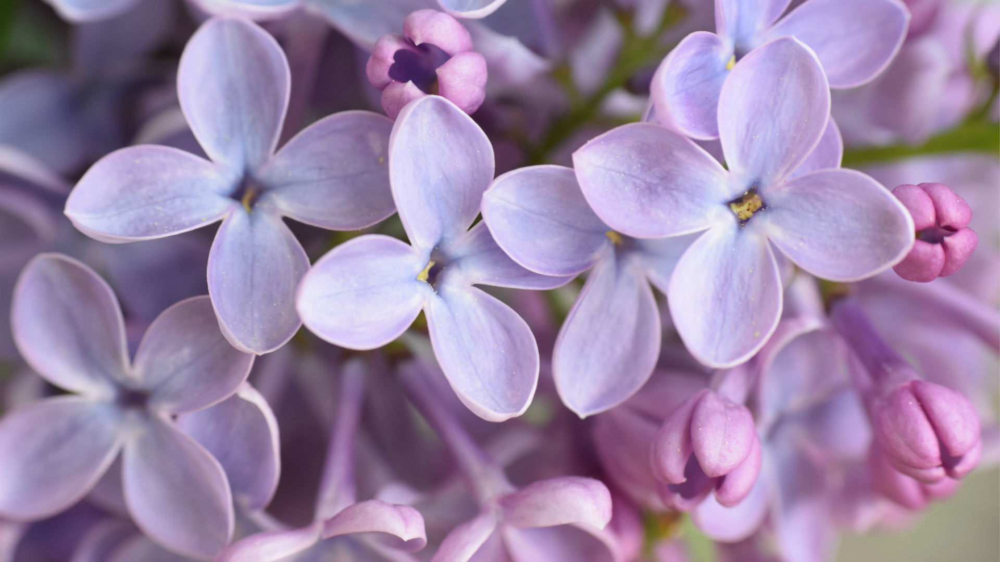
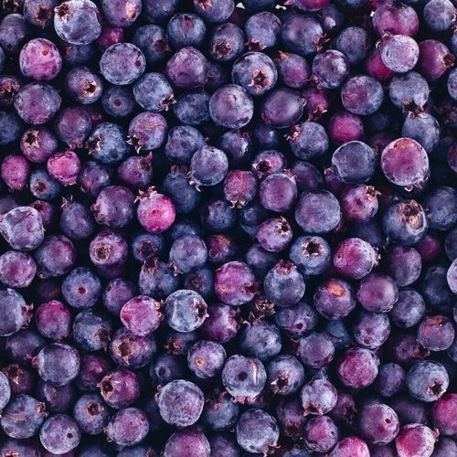
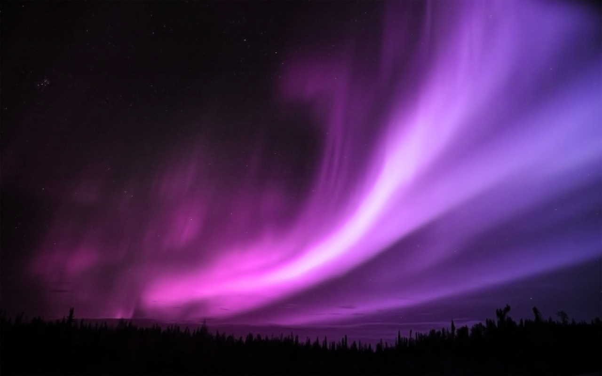
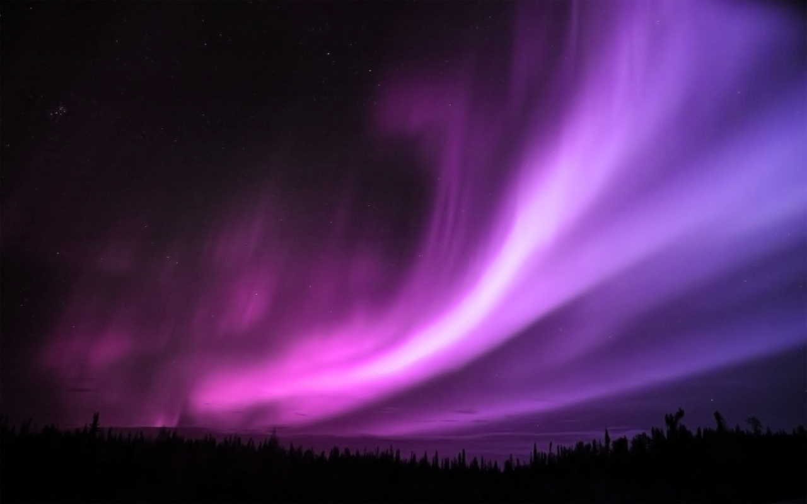

purple_sss
 
Purplerefers to any of a variety of colors with hue between red and blue.
Purple is closely associated with violet. In optics, purple and violet refer to
colors
that look similar, but purples are mixtures of red light and blue or violet light,
whereas violets are spectral colors (of single wavelengths of light).
Purple is ~. It makes me sad, happy, boring, scare and more.
Sometimes I dive into purple ocean and swim around as if I'm a big whale
and
fly around purple sky drawing my own stars.
